一级主角接入 · 手机与平板
新图完整保留透明通道，校准到原出弹点。仅一级主角替换；墙体遮挡、其他角色统一及连续动态仍待整改。下方为固定场景，并非自然战斗或真机验收。
手机修改前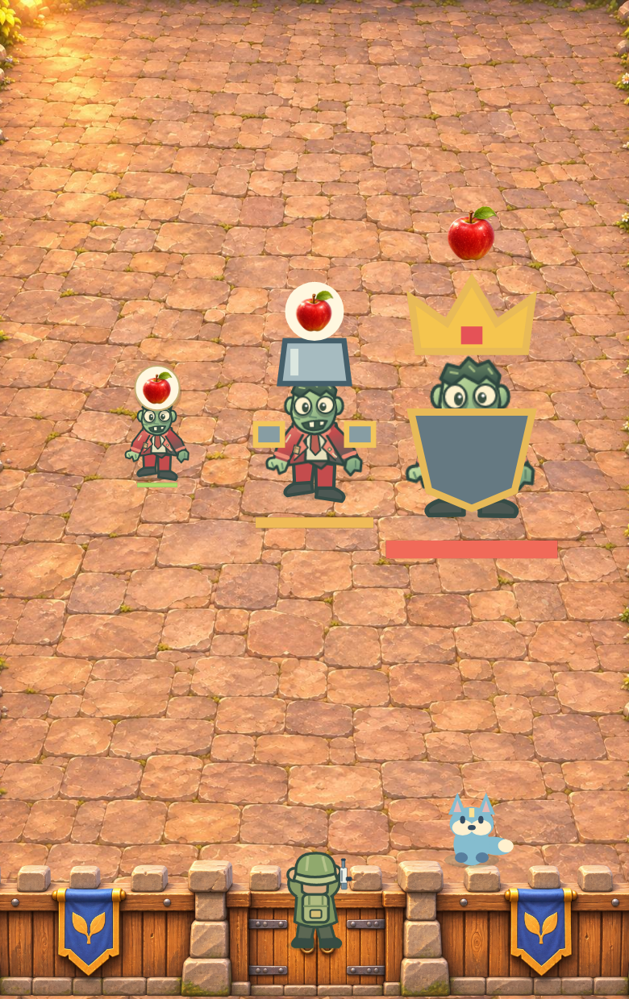
平板修改前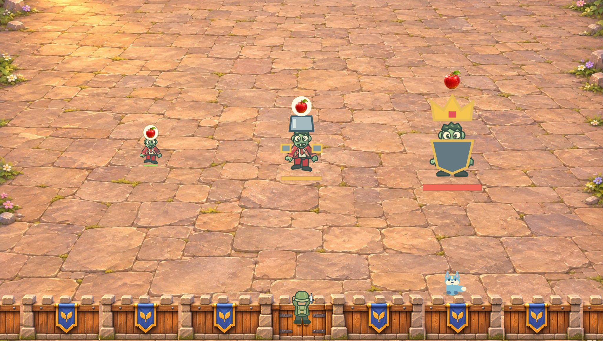
正式CanvasScene绘制器，固定第一关苹果怪/两类Boss、一级武器/房屋/蓝狐，逐关仅切换背景以控制对比变量。并非各关自然刷怪、微信截图、真实设备或动态验收。首页及五级房屋沿用此前基线。
尺寸与哈希 · 五级房屋与首页基线phone-level-1 · 390×620 CSS px · DPR 2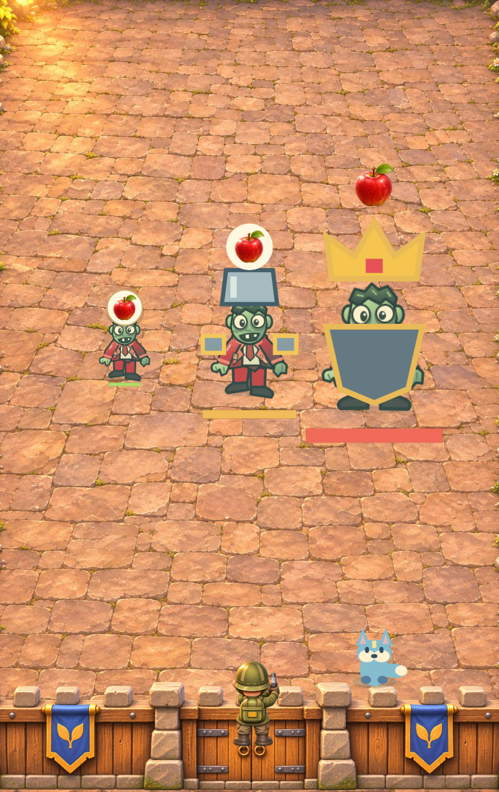
phone-level-2 · 390×620 CSS px · DPR 2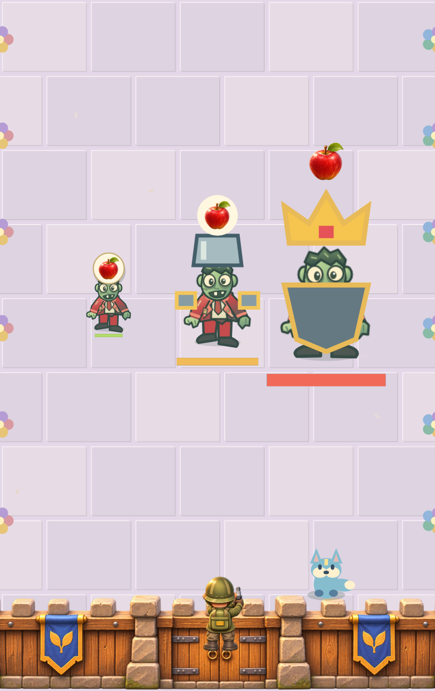
phone-level-3 · 390×620 CSS px · DPR 2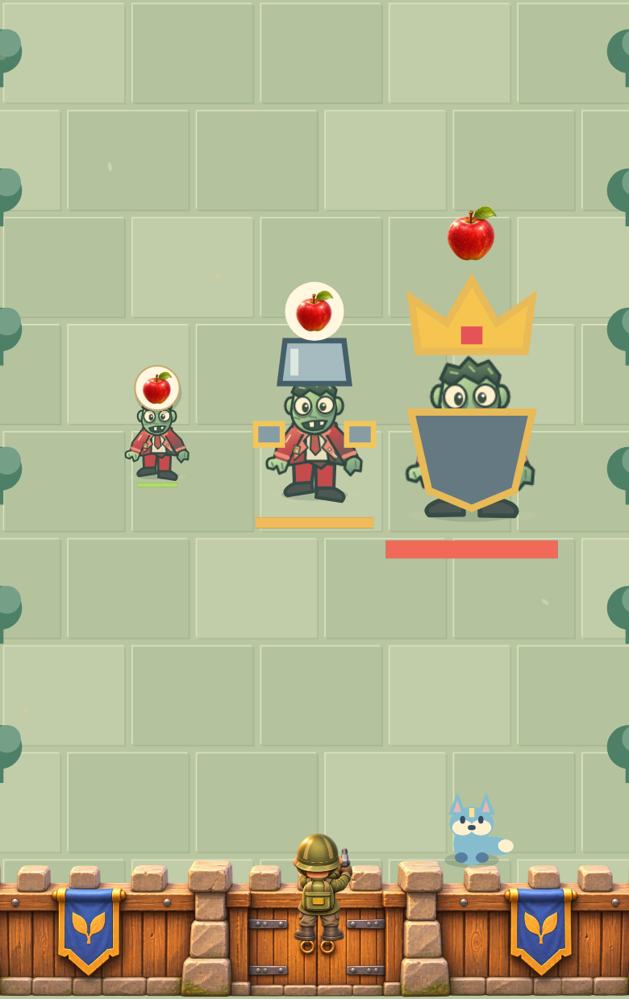
phone-level-4 · 390×620 CSS px · DPR 2phone-level-5 · 390×620 CSS px · DPR 2phone-level-6 · 390×620 CSS px · DPR 2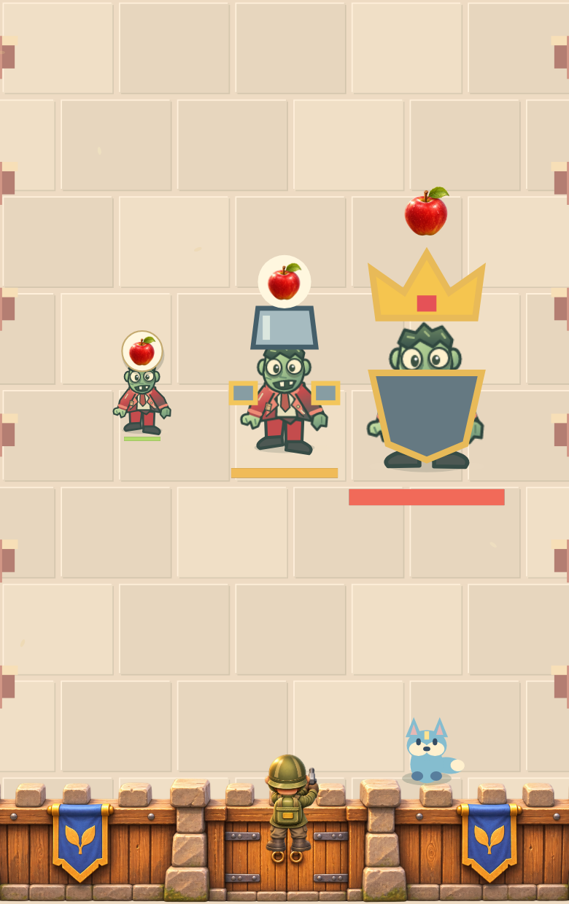
phone-level-7 · 390×620 CSS px · DPR 2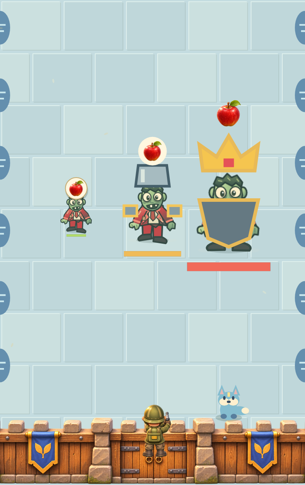
phone-level-8 · 390×620 CSS px · DPR 2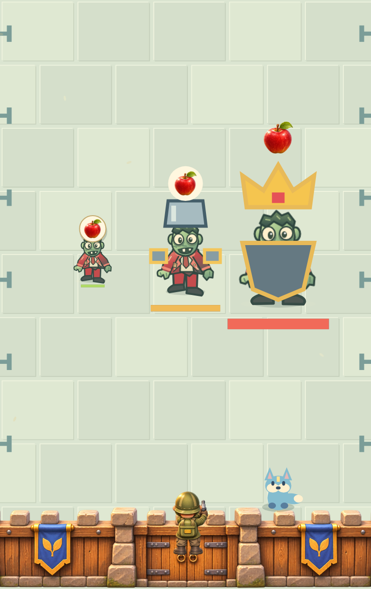
ipad-level-1 · 1024×580 CSS px · DPR 2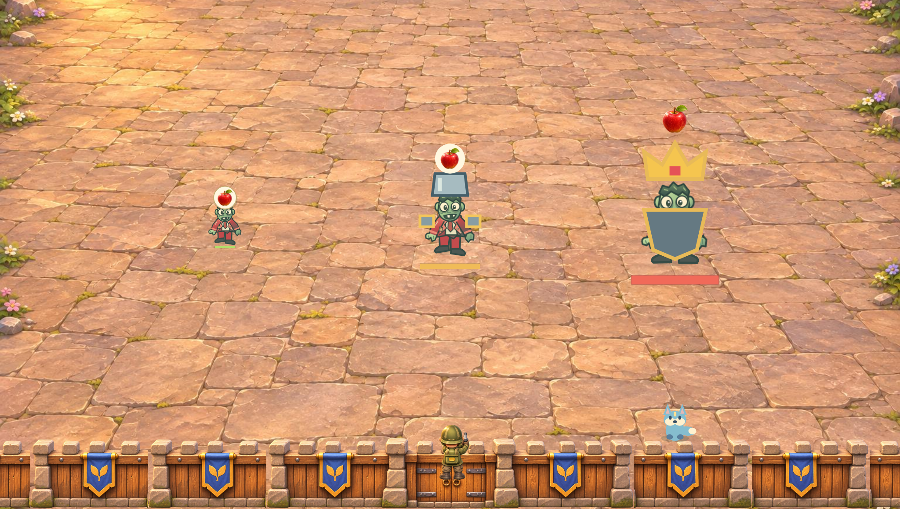
ipad-level-2 · 1024×580 CSS px · DPR 2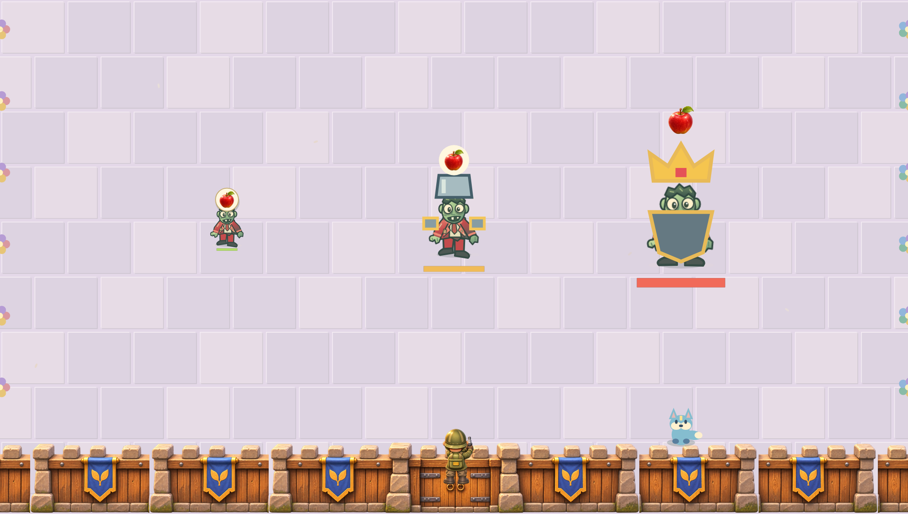
ipad-level-3 · 1024×580 CSS px · DPR 2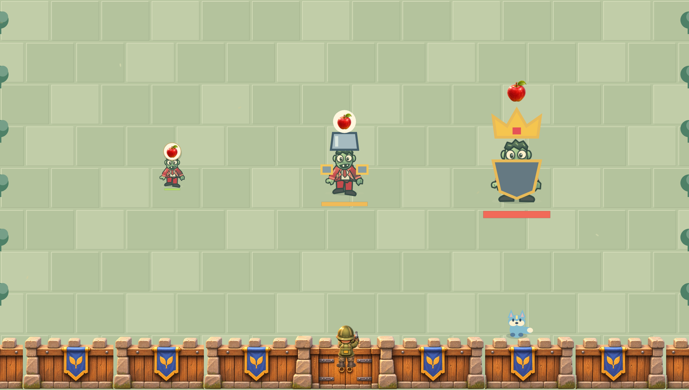
ipad-level-4 · 1024×580 CSS px · DPR 2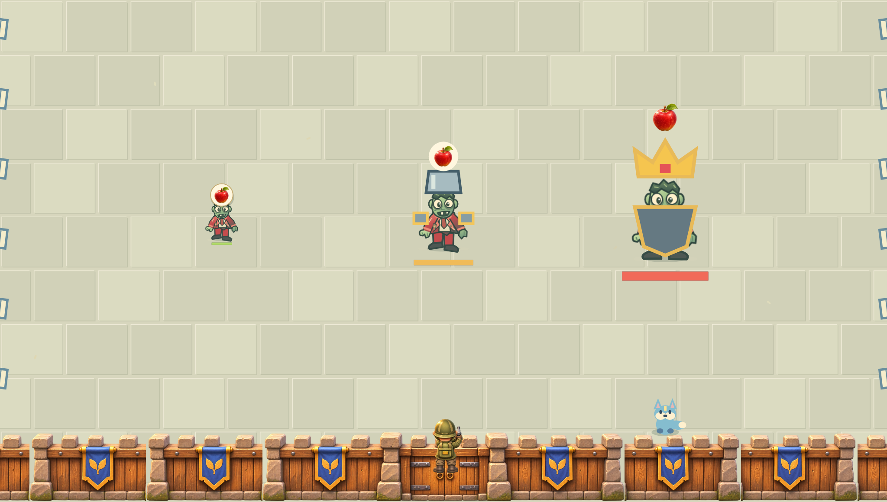
ipad-level-5 · 1024×580 CSS px · DPR 2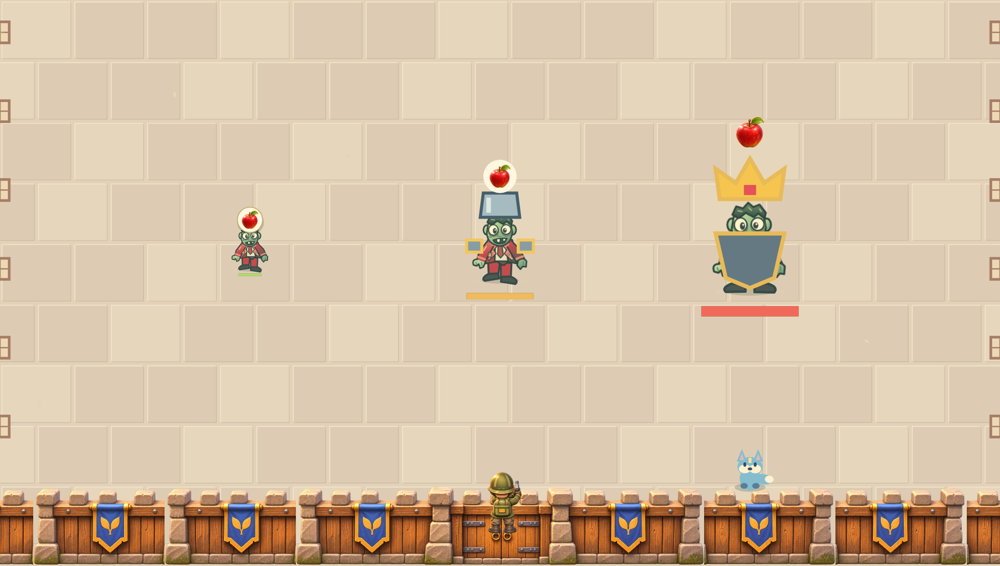
ipad-level-6 · 1024×580 CSS px · DPR 2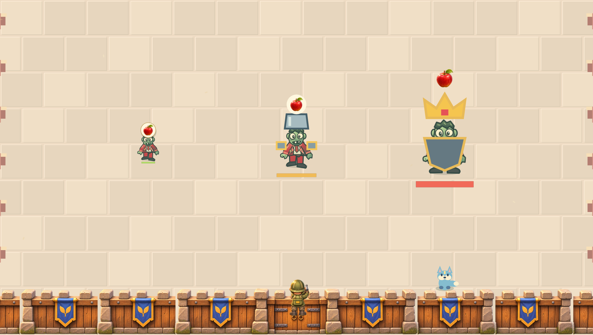
ipad-level-7 · 1024×580 CSS px · DPR 2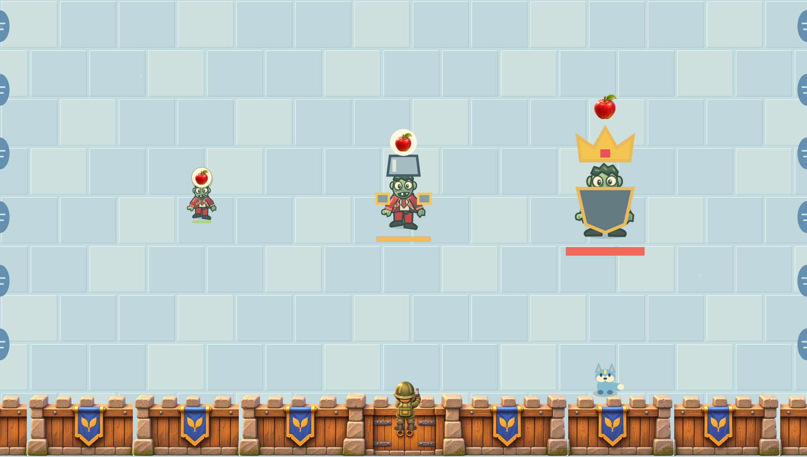
ipad-level-8 · 1024×580 CSS px · DPR 2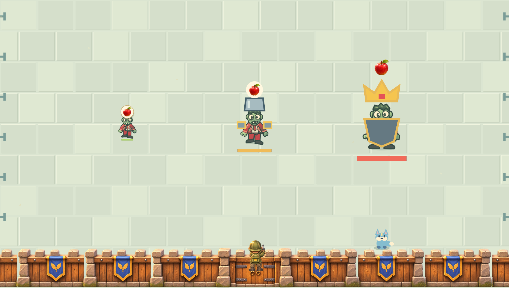